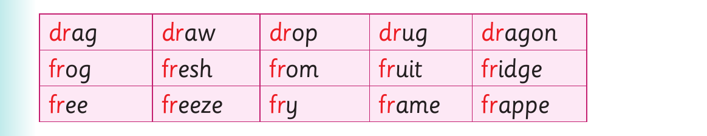

Words with dr and fr consonants - continued

dr ag dr aw dr op dr ug dr agon fr og fr esh fr om fr uit fr idge fr ee fr eeze fr y fr ame fr appe
Activity 2
Read the following sentences aloud: (a) Drive to the north. (b) Draw a carrot. (c) Can you buy me a new dress? (d) These fruits are fresh. (e) The trousers belonged to Frank. (f) Put the picture in a frame.